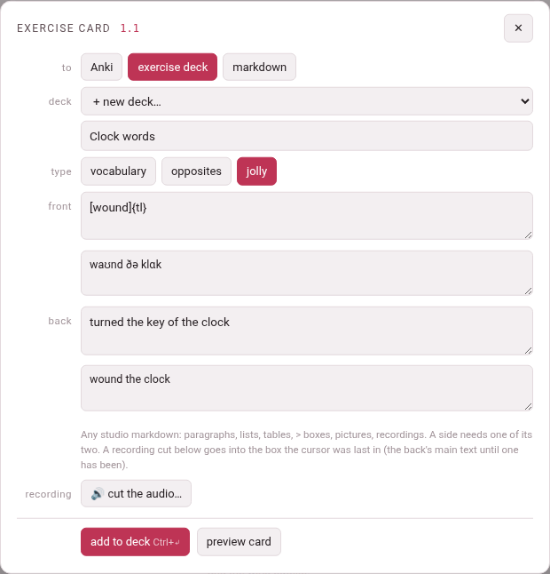

Exercise decks, markdown and jolly cards
The row at the top of the card sheet, to, says where the card goes. The same fields make all three; the rows one destination has no use for step aside, and the sheet’s button changes with the choice — and so does its head, which reads anki card, exercise card or card markdown.
| to | The button | What becomes of the card |
|---|---|---|
| Anki | save card | a note in the card store, built into an .apkg for Anki (Making a card) |
| exercise deck | add to deck | a flashcard exercise in one of the toolbox’s exercise decks, studied on the deck’s page |
| markdown | copy markdown | one :::exercise flashcard block on the clipboard, for a studio document or a deck’s Add exercise… |
Your choice is remembered from one card to the next — separately in the books and in the videos. Ctrl+Enter presses whichever button is showing.
1. An exercise deck#
The picker lists the exercise decks of the book’s or the video’s language — an exercise deck reads its exercises in its own language, so no other deck could take this card — each with its number of exercises, and + new deck… at its foot, with a box: name the new exercise deck. A new deck is made when the card is added, and picked, so a second card goes into it rather than making another. The name you typed for a new Anki deck and the one for a new exercise deck are kept apart while the sheet is open: switching the destination does not carry one into the other.
tags and build .apkg belong to Anki and are hidden here; so is ⇆ synced lately?. In a video a note under to says what happens: an exercise in the deck, studied on its page; the recording and the frame go in with it.
add to deck writes the card as a studio flashcard — the word, its reading and transliteration, the meaning, the context, the notes and the source, with the direction kept as a preference — and adds it. The sheet then says what went in and where, with a link to the deck, and stays open:
added ✓ — a vocabulary card for “سیب”, with its recording and its frame, to “Market words” — open the deckAny warning the deck gives is listed under it, one to a line — a picture or a recording it could not find, say.
A card the deck already holds is not refused outright: the sheet says this exercise is already in “Market words” — press “add it again” to add a second one, and the button now reads add it again. Press it and a second copy goes in. Change anything first — a field, the deck, the type, the recording, the frame — and the button goes back to add to deck, and the deck is asked again.
The deck remembers where the card was made. On the deck’s page the exercise says it comes from the book’s or the video’s title, with the subparagraph’s number or the time, and the link opens the reader at that paragraph or the player at that second.
2. Markdown#
copy markdown writes the same card and puts it on the clipboard; nothing is stored anywhere. The sheet says what it copied:
copied ✓ — a vocabulary card for “clock”. Paste it into a studio document or a deck’s “Add exercise”: the recording comes along from the clip tray when it is pasted therePaste it into a studio document to keep it with your notes, or open a deck’s page, press Add exercise…, and use Paste markdown… — or press Ctrl+V on the grid of exercise types — to open it in the form as a new exercise, ready to look over before it is added.
When the browser will not let the page write to the clipboard, the sheet says not copied — the browser would not put it on the clipboard: the markdown is below, to copy by hand, and shows the block in a markdown box, already selected, to copy yourself.
What the clipboard receives is one exercise block, exactly as you would write it in the studio:
:::exercise flashcardcard-type: vocabtarget: [clock]{tl}transliteration: klɑkmeaning: the thing on a wall that tells the timecontext: wound the clocksource: [The Clock and the Wind — 1.1](https://…/books/english/mini-en/reader/#par-1-1)front-audio: audio/clock-710aea.mp3bidirectional: true:::A card made in a video names the video and the moment instead, with a link that opens it there — the player’s own address for a film on your computer, YouTube’s for a YouTube video — and a captured frame goes in just above the recording:
source: [Market day — 0:12](https://www.youtube.com/watch?v=…&t=12s)back-image: images/clock-frame-3fa9c2.jpgfront-audio: audio/clock-710aea.mp3- A word of a language written in the Latin alphabet is marked as the target’s,
[clock]{tl}, since its letters alone cannot say which language it is in; a Persian, Japanese or Hindi word needs no mark. - A field of several lines is written as
key: |with its lines under it. - The direction is
bidirectional: truefor both,direction: reversefor the reverse-only card, and nothing for the forward one. - The recording and the frame (from a video only: a book has no frame to capture) are named by their names in the clip tray,
audio/…andimages/…; a document or a deck the block is pasted into copies them in from there.
The block, drawn as the studio draws it — click the card to turn it:
:::exercise flashcardcard-type: vocabtarget: سیبtransliteration: sibmeaning: applecontext: سیب چند استnotes: سیب sib apple · چند čand how much, how manybidirectional: true:::3. Jolly cards#
An exercise deck and markdown offer a third type beside vocabulary and opposites: jolly, a card whose front and back are yours. Each side has a main text and a smaller one under it — front, front, small (in a book, the second box under front), back, back, small — and each of the four boxes takes any studio markdown: paragraphs, lists, tables, > boxes, pictures, recordings. A side needs one of its two boxes filled; the sheet says the front is empty: write in one of its two fields (or the back) when one is not.

The first time you pick jolly, the boxes are filled from the card: the word on the front — marked […]{tl} in a Latin-alphabet language — its reading and transliteration under it, joined by ·, the meaning on the back and the context under that. Once you have typed in them they are left as you wrote them. The word’s own rows step aside while jolly is on, and come back when you pick another type.
Anki has no jolly note type, so jolly is not offered for Anki, and switching to Anki turns a jolly card back into a vocabulary one.
A recording or a frame on a jolly card is a line of its own in one of the boxes — ,  — rather than a side of the card. It goes into the box the cursor was last in, whether or not you typed there, after the line the cursor was on; before any box has had the cursor, at the end of the back’s main text. Under the sheet’s recording the note in the jolly box the cursor was last in (the back’s main text until one has been) reminds you. A clip cut before you picked jolly goes in the same way when you pick it.
The line goes in once. Delete it, and the card goes without that recording or frame — the button’s answer then says so: the recording is not on the card: its line was taken out of the fields. A clip cut again replaces the old one, line and all.
The same card, as markdown:
:::exercise flashcardcard-type: jollyfront-primary: [clock]{tl}front-secondary: klɑkback-primary: | the thing on a wall that tells the time back-secondary: wound the clock:::target: en:::exercise flashcardcard-type: jollyfront-primary: [clock]{tl}front-secondary: klɑkback-primary: | the thing on a wall that **tells the time** - on a wall - on a towerback-secondary: wound the clock:::clock
the thing on a wall that tells the time
- on a wall
- on a tower
4. Preview card, for a deck or markdown#
For these two destinations preview card draws the card as a deck’s page and a studio document draw it — the studio’s own renderer, its recordings and pictures played and shown from the clip tray — and a click on it turns it, as on the deck’s page. ⤢ Enlarge in the card’s head opens the same card, only bigger. The line under it says so, in words that differ a little from place to place:
| Where | The line under the card |
|---|---|
| a book, to an exercise deck | drawn by the studio, as the deck’s page draws it — click the card to turn it |
| a book, to markdown | drawn by the studio, as a document and a deck draw it — click the card to turn it |
| a video, either way | drawn as a deck and a studio document draw it — click the card to turn it |
5. What the sheet says when the card kit is missing#
The exercise deck, markdown and the cut editor all come from one script, the card kit (lib/cardkit.js). Should it not load, each of them says the card kit (lib/cardkit.js) did not load: reload the page; the Anki destination still works.